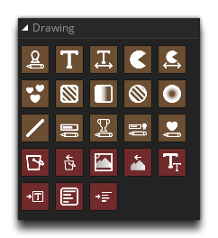

In der Zeichenaktionsbibliothek finden Sie die Aktionen, die zum Zeichnen von Sprites, Text oder Formen sowie zum Festlegen bestimmter Zeicheneigenschaften erforderlich sind. Die meisten dieser Aktionen dienen nur zur Verwendung in den verschiedenen Draw-Ereignissen eines Objekts und funktionieren möglicherweise nicht, wenn sie außerhalb des Draw-Ereignisses verwendet werden. Die Ausnahmen davon sind die Set- Aktionen, die zu jedem Event hinzugefügt werden können und danach alle Zeichen für alle Instanzen betreffen.
Es ist wichtig zu beachten, dass, wenn Sie irgendwelche Aktionen in das Haupt Draw - Ereignis eines Objekt hinzufügen, dann wird es nicht das Sprit zeichnen, die zu der Instanz zugewiesen wurden, es sei denn Sie ausdrücklich sagen GameMaker Studio 2 zu ziehen, eine Aktion wie mit Draw Selbst. Grundsätzlich zeichnet GameMaker Studio 2 standardmäßig jedes Sprite, das einer Instanz zugewiesen ist, nur dann, wenn sich im Draw-Ereignis nichts anderes befindet.
Die verfügbaren Draw-Aktionen lauten wie folgt: